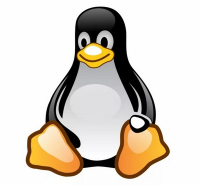
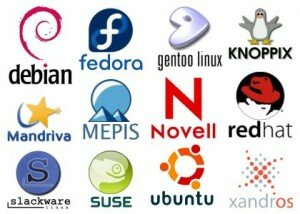

Урок 7. Программное обеспечение компьютера
Перечень рассматриваемых вопросов:
- Выяснить роль программного обеспечения при работе компьютера.
- Познакомиться с видами программного обеспечения, научиться различать различные виды программного обеспечения.
- Научиться понимать назначение прикладных программ и систем программирования.
Тезаурус:
Программное обеспечениеM – это совокупность всех программ, предназначенных для выполнения на компьютере.
Программа – это описание на формальном языке, «понятном» компьютеру, последовательности действий, которые необходимо выполнить над данными для решения поставленной задачи.
Операционная система – это комплекс программ, обеспечивающих совместное функционирование всех устройств компьютера и предоставляющих пользователю доступ к ресурсам компьютера.
Аппаратный интерфейс – средства, обеспечивающие взаимодействие между устройствами компьютера.
Пользовательский интерфейс – средства, обеспечивающие взаимодействие человека и компьютера.
Загрузка компьютера – это последовательная загрузка программ операционной системы из долговременной памяти в оперативную память компьютера.
Сервисные программы – это программы-архиваторы, антивирусные программы, коммуникационные программы и другие.
Прикладными программами или приложениями называют программы, с помощью которых пользователь может работать с разными видами информации, не прибегая к программированию.
Комплекс программных средств, предназначенных для разработки компьютерных программ на языке программирования, называют системой программирования.
Программирование - процесс создания программ, разработки всех типов программного обеспечения.
Теоретический материал для самостоятельного изучения
Что же такое компьютерная программа? Это описание на понятном компьютеру языке последовательности действий, которые нужно выполнить над данными для решения конкретной задачи.
Без программного обеспечения компьютер работать не сможет. Поэтому компьютер рассматривают как систему взаимосвязанных частей: аппаратного обеспечения и программного обеспечения. Программным обеспечением компьютера называют совокупность всех программ, предназначенных для выполнения различных задач.
В настоящее время насчитывается огромное количество программ, они непрерывно развиваются, совершенствуются, на смену одним программам приходят другие.
Все программы можно разделить на три группы: системное программное обеспечение, прикладное программное обеспечение и системы программирования.
Системное программное обеспечение включает в себя операционную систему и сервисные программы.
Главной частью программного обеспечения является операционная система. Без неё компьютер работать не сможет.
Самыми распространёнными на сегодняшний день считаются операционные системы Windows, Linux, Mac OS.
Операционная система обеспечивает совместное функционирование всех устройств компьютера и предоставляет пользователю доступ к ресурсам компьютера. Средства, обеспечивающие взаимосвязь между объектами операционной системы, называют интерфейсом.
Аппаратный интерфейс обеспечивает взаимодействие между устройствами компьютера. Он содержит программы – драйверы, которые отвечают за работу подключённых к компьютеру устройств, например, принтера, монитора, клавиатуры и других.
Пользовательский интерфейс содержат программы, которые поддерживают диалог пользователя с компьютером, то есть, запуск программ, печать текста на принтере и так далее.
Загрузка операционной системы из долговременной памяти в оперативную память компьютера происходит поэтапно. Сначала загрузчик BIOS из постоянного запоминающего устройства производит тестирование и настройку всех аппаратных средств. Этот процесс виден на экране монитора. Если всё оборудование функционирует нормально, происходит поиск начального загрузчика операционной системы на внешнем носителе, который является системным. Например, на жёстком диске. После обнаружения, программа-загрузчик загружается в оперативную память. После этого операционная система начинает функционировать.
К сервисным программам относятся различные программы, которые обслуживают диски: проверяют их, восстанавливают, очищают. А также программы-архиваторы, программы для борьбы с компьютерными вирусами, коммуникационные программы и многие другие.
Архиваторы – это программы, которые обеспечивают уменьшение объёма хранимой информации.
Антивирусные программы защищают компьютер от вирусов, обнаруживают и удаляют компьютерные вирусы.
Коммуникационные программы необходимы для обеспечения доступа к сети Интернет.
Прикладными программами или приложениями называют программы, с помощью которых можно работать с различными видами информации, не прибегая к программированию. Выделяют приложения общего и специального назначения.
К приложениям общего назначения относятся: текстовые редакторы, электронные таблицы, графические редакторы, редакторы презентаций, мультимедийные проигрыватели, системы управления базами данных.
К программам специального назначения можно отнести: издательские системы, бухгалтерские программы, системы проектирования, программы компьютерного моделирования, математические пакеты, геоинформационные системы, медицинские экспертные системы.
Комплекс программных средств, предназначенных для разработки компьютерных программ на языке программирования, называют системой программирования. Такие программы разрабатывают программисты. Программирование является процессом создания программ, то есть разработки всех типов программного обеспечения.
Для записи программ используют специальные языки – языки программирования. Сейчас насчитывается несколько тысяч таких языков.
Все программы можно разделить ещё на две большие группы по их правовому статусу: программное обеспечение, которое является частной собственностью авторов или правообладателей, и свободное программное обеспечение.
Программы, входящие в первую группу, также можно разделить на: коммерческие, условно бесплатные и свободно распространяемые.
Свободное программное обеспечение даёт возможность пользователям иметь доступ к исходным кодам программ.
Материал для углублённого изучения темы.
Операционная система Linux.
«Linux» ‑ это компьютерная операционная система, которая распространяется бесплатно.
ОС Linux никому не принадлежит. Точнее можно сказать, что она принадлежит сообществу программистов. На бесплатной основе каждый желающий может вносить свои изменения, которые в дальнейшем принимаются сообществом.
История этой операционной системы началась в 1983 году, тогда Linux ещё не носила своего современного названия, работать над ней начал Ричард Столлман. Примерно через восемь лет он уже практически закончил разработку всех системных программ входящих в её состав.
В 90-ые годы к работе над системой присоединился молодой хакер и программист Линус Торвальдс, он и разработал ядро для операционной системы. И, как видно из имени этого человека, своё название система получила именно в честь него. Кстати и пингвин, ставший эмблемой системы, был до этого личным талисманом Линуса, а вот сделать этого пингвина символом операционной системы придумала жена программиста – Туве.

Широкое распространение система получила после того, как сообщество программистов подхватило основную идею Linux и стало вкладывать свои усилия в развитие проекта.
Довольно часто к операционной системе Linux относят программы, которые дополняют эту OС, и прикладные программы, которые делают её полноценной многофункциональной операционной средой.

Достоинства:
Бесплатность. Установив Linux, вы получите набор из тысяч бесплатных программ. Хоть они и не столь привычны как Windows-программы, но абсолютно функциональны.
Надёжность. Корректная работа аппаратной части ПК, позволит Linux работать годы без перезагрузки и зависаний. А кнопка Reset вообще никогда не понадобится.
Безопасность. В Linux практически нет вирусов. Само построение операционной системы исключает работу вредоносных программ.
Открытый исходный код. Это даёт возможность использовать и модифицировать код по своему желанию. Можно в любой момент исправить какие-нибудь ошибки или недочёты системы, а также расширить её функциональность, путём написания дополнений или программ, работающих под её управлением.
На данный момент вокруг ОС Linux сформировалось огромное сообщество программистов, которые постоянно совершенствуют систему. Они разрабатывают новые версии и разновидности данной ОС, пишут самые разнообразные программы, работающие под Linux.